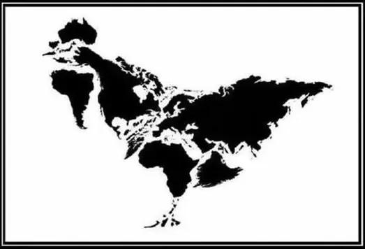

建设新时代中国特色社会主义奇幻世界
地图

「卡壳世界」（The Kock World）地图
正文
更新于2020-3-20 Venelis，共17篇
| № |
发表时间 |
标题 |
本站 |
备注 |
| 1 | | 只有龙才会说龙语 | 正常 | |
| 2 | | 通背拳法与居合斩 | 正常 | |
| 3 | | 教内无派千奇百怪 | 正常 | |
| 4 | | 谁说知识就是力量 | 正常 | |
| 5 | | 爱与正义与红灯区 | 正常 | |
| 6 | | 马耳他护哔骑士团 | 正常 | |
| 7 | | 浓墨重彩抹黑洗白 | 正常 | |
| 8 | | 金玉锦绣珠光宝气 | 正常 | |
| 9 | | 有子七人莫慰母心 | 正常 | |
| 10 | | 七月流火时日曷丧 | 正常 | 原名〈谁的太阳？双城侠隐记〉 |
| 11 | | 从雪山来到大海去 | 正常 | 原名〈听惯了艄公的号子，看惯了船上的白帆〉 |
| 12 | | 此心安处即是吾乡 | 正常 | 原名〈一道电光裂长空，裂长空〉 |
| 13 | | 雷霆雨露皆是君恩 | 正常 | |
| 14 | | 食不厌精脍不厌细 | 正常 | |
| 15 | | 镜花水月梦幻泡影 | 正常 | |
| 16 | | 皇天后土纸猫刍狗 | 正常 | |
| 17 | | 冠由下生乱自上作 | 草稿 | |
Σ |
合计 |
17 |
|
3 |
作品相关
更新于2020-3-25 Mercurii，共105篇
| № |
发表时间 |
标题 |
本站 |
备注 |
| 1 | | 缘起〔上〕 | 正常 | |
| 2 | | 缘起〔下〕 | 正常 | |
| 3 | | 注释〔一〕 | 正常 | |
| 4 | | 注释〔二〕 | 正常 | |
| 5 | | 注释〔三〕 | 正常 | |
| 6 | | 注释〔四〕 | 正常 | |
| 7 | | 注释〔五〕 | 正常 | |
| 8 | | 注释〔六〕 | 正常 | |
| 9 | | 注释〔七〕 | 正常 | |
| 10 | | 注释〔八〕 | 正常 | |
| 11 | | 注释〔九〕 | 正常 | |
| 12 | | 注释〔十〕 | 正常 | |
| 13 | | 注释〔十一〕 | 正常 | |
| 14 | | 注释〔十二〕 | 正常 | |
| 15 | | 注释〔十三〕 | 正常 | |
| 16 | | 注释〔十四〕 | 正常 | |
| 17 | | 注释〔十五〕 | 正常 | |
| 18 | | 注释〔十六〕 | 正常 | |
| 19 | | 注释〔十七〕 | 正常 | |
| 20 | | 注释〔十八〕 | 正常 | |
| 21 | | 注释〔十九〕 | 正常 | |
| 22 | | 注释〔二十〕 | 正常 | |
| 23 | | 注释〔廿一〕 | 正常 | |
| 24 | | 注释〔廿二〕 | 正常 | |
| 25 | | 注释〔廿三〕 | 正常 | |
| 26 | | 注释〔廿四〕 | 正常 | |
| 27 | | 注释〔廿五〕 | 正常 | |
| 28 | | 注释〔廿六〕 | 正常 | |
| 29 | | 注释〔廿七〕 | 正常 | |
| 30 | | 注释〔廿八〕 | 正常 | |
| 31 | | 注释〔廿九〕 | 正常 | |
| 32 | | 注释〔三十〕 | 正常 | |
| 33 | | 注释〔卅一〕 | 正常 | |
| 34 | | 注释〔卅二〕 | 正常 | |
| 35 | | 注释〔卅三〕 | 正常 | |
| 36 | | 注释〔卅四〕 | 正常 | |
| 37 | | 注释〔卅五〕 | 正常 | |
| 38 | | 注释〔卅六〕 | 正常 | |
| 39 | | 注释〔卅七〕 | 正常 | |
| 40 | | 注释〔卅八〕 | 正常 | |
| 41 | | 注释〔卅九〕 | 正常 | |
| 42 | | 注释〔四十〕 | 正常 | |
| 43 | | 注释〔卌一〕 | 正常 | |
| 44 | | 注释〔卌二〕 | 正常 | |
| 45 | | 注释〔卌三〕 | 正常 | |
| 46 | | 注释〔卌四〕 | 正常 | |
| 47 | | 注释〔卌五〕 | 正常 | |
| 48 | | 注释〔卌六〕 | 正常 | |
| 49 | | 注释〔卌七〕 | 正常 | |
| 50 | | 注释〔卌八〕 | 正常 | |
| 51 | | 注释〔卌九〕 | 正常 | |
| 52 | | 注释〔五十〕 | 正常 | |
| 53 | | 注释〔５１〕 | 正常 | |
| 54 | | 注释〔５２〕 | 正常 | |
| 55 | | 注释〔５３〕 | 正常 | |
| 56 | | 注释〔５４〕 | 正常 | |
| 57 | | 注释〔５５〕 | 正常 | |
| 58 | | 注释〔５６〕 | 正常 | |
| 59 | | 注释〔５７〕 | 正常 | |
| 60 | | 注释〔５８〕 | 正常 | |
| 61 | | 注释〔５９〕 | 正常 | |
| 62 | | 注释〔６０〕 | 正常 | |
| 63 | | 注释〔６１〕 | 正常 | |
| 64 | | 注释〔６２〕 | 正常 | |
| 65 | | 注释〔６３〕 | 正常 | |
| 66 | | 注释〔６４〕 | 正常 | |
| 67 | | 注释〔６５〕 | 正常 | |
| 68 | | 了却一桩心事 | 正常 | |
| 69 | | 注释〔６６〕 | 正常 | |
| 70 | | 注释〔６７〕 | 正常 | |
| 71 | | 注释〔６８〕 | 正常 | |
| 72 | | 注释〔６９〕 | 正常 | |
| 73 | | 注释〔７０〕 | 正常 | |
| 74 | | 注释〔７１〕 | 正常 | |
| 75 | | 注释〔７２〕 | 正常 | |
| 76 | | 注释〔７３〕 | 正常 | |
| 77 | | 注释〔７４〕 | 正常 | |
| 78 | | 注释〔７５〕 | 正常 | |
| 79 | | 注释〔７６〕 | 正常 | |
| 80 | | 注释〔７７〕 | 正常 | |
| 81 | | 注释〔７８〕 | 正常 | |
| 82 | | 注释〔７９〕 | 正常 | |
| 83 | | 注释〔８０〕 | 正常 | |
| 84 | | 注释〔８１〕 | 正常 | |
| 85 | | 注释〔８２〕 | 正常 | |
| 86 | | 注释〔８３〕 | 正常 | |
| 87 | | 注释〔８４〕 | 正常 | |
| 88 | | 注释〔８５〕 | 正常 | |
| 89 | | 注释〔８６〕 | 正常 | |
| 90 | | 注释〔８７〕 | 正常 | |
| 91 | | 注释〔８８〕 | 正常 | |
| 92 | | 注释〔８９〕 | 正常 | |
| 93 | | 注释〔９０〕 | 正常 | |
| 94 | | 注释〔９１〕 | 正常 | |
| 95 | | 注释〔９２〕 | 正常 | |
| 96 | | 注释〔９３〕 | 正常 | |
| 97 | | 小结 | 正常 | |
| 98 | | 注释〔９４〕 | 正常 | |
| 99 | | 注释〔９５〕 | 正常 | |
| 100 | | 小结（续） | 正常 | |
| 101 | | 注释〔９６〕 | 正常 | |
| 102 | | 注释〔９７〕 | 正常 | |
| 103 | | 注释〔９８〕 | 正常 | |
| 104 | | 注释〔９９〕 | 正常 | |
| 105 | | 注释〔100〕 | 草稿 | |
Σ |
合计 |
105 |
|
|